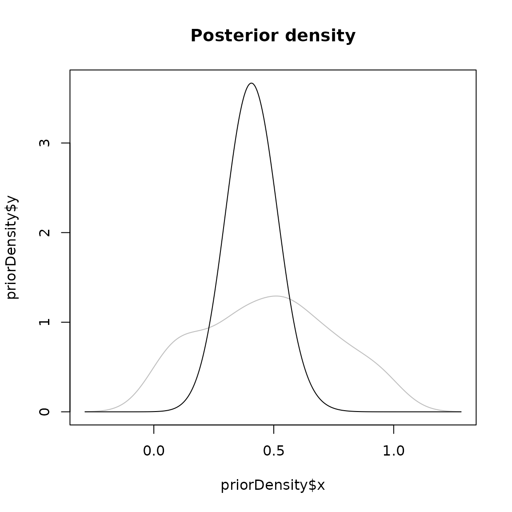
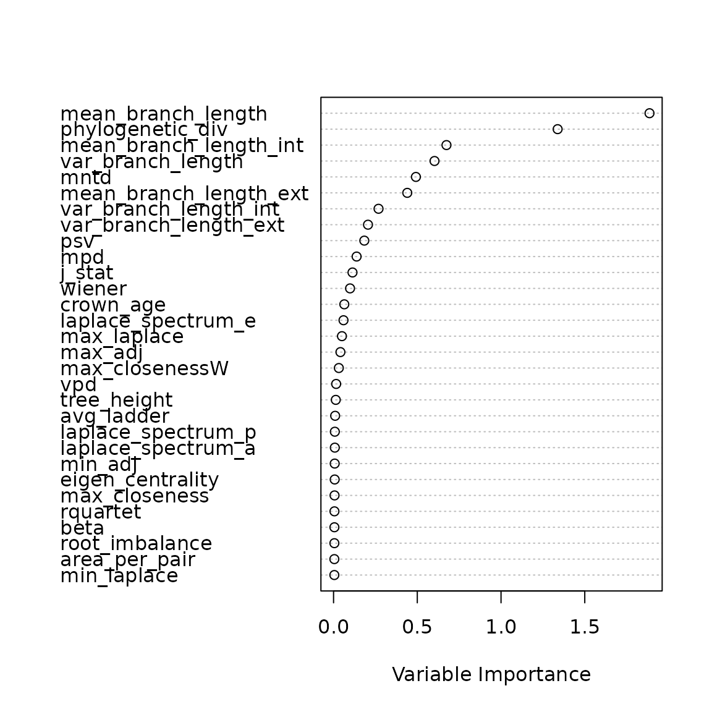
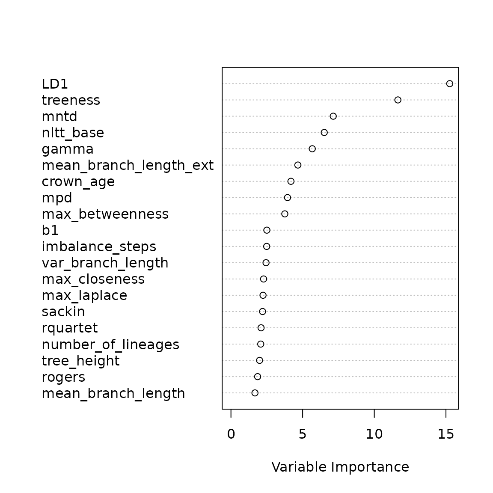
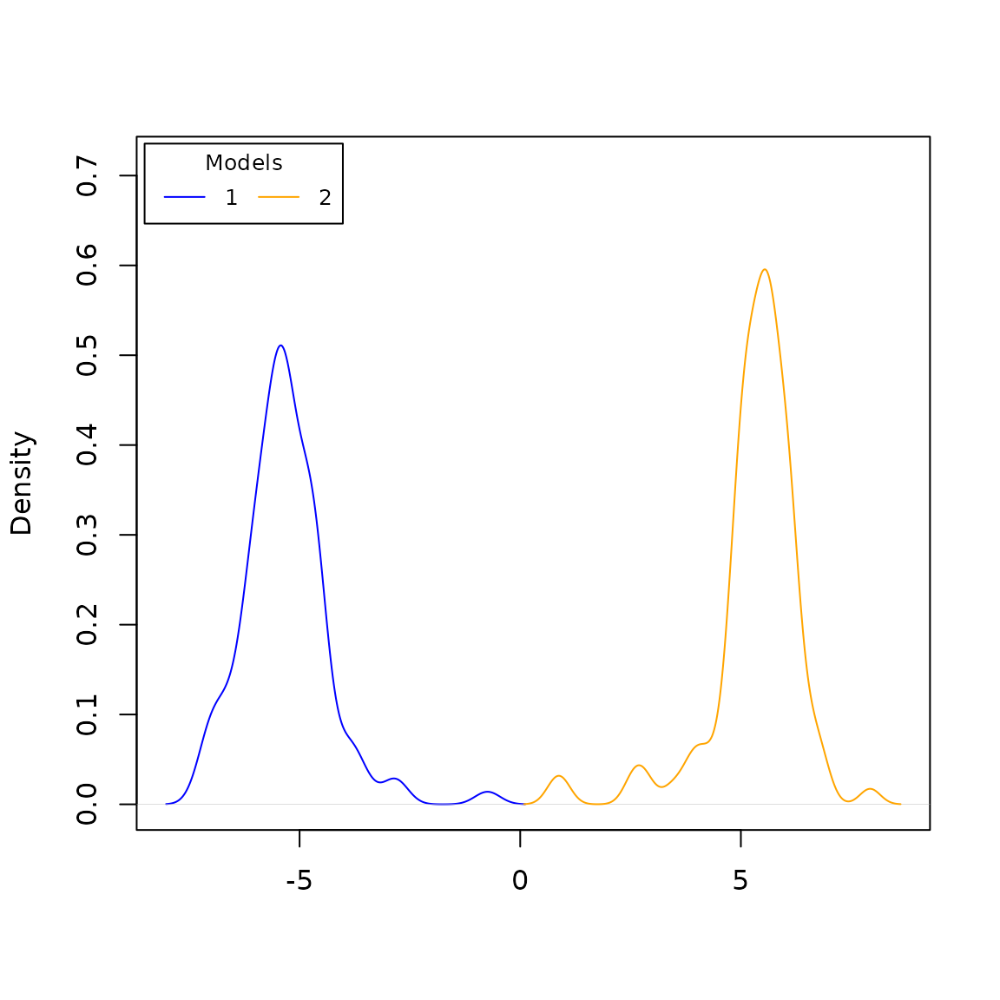

ABC
In Approximate Bayesian Computation (ABC), the goal is to fit a model to data by comparing summary statistics of data simulated under the model, with summary statistics of the target data. By minimizing the difference in summary statistics between simulated and target data, ABC then fits the model. Here, we will make use of abcrf, a fast method to use ABC that makes use of decision trees to build a random forest. These trees will be trained (abcrf in a way is a kind of machine learning approach to ABC) on training data, and can then be used to predict outcomes on test data.
Simple parameter example
In this example, we will see if abcrf can be trained to estimate the birth rate on a Yule tree (e.g. without extinction). First, we generate training data:
num_points <- 100
test_data <- matrix(nrow = num_points,
ncol = 1 + length(treestats::list_statistics()))
for (r in 1:num_points) {
b <- runif(1)
focal_tree <- ape::rphylo(n = 100, birth = b, death = 0)
focal_stats <- treestats::calc_all_stats(focal_tree)
test_data[r, ] <- c(b, focal_stats)
}## Loading required namespace: RSpectra
colnames(test_data) <- c("birth", names(focal_stats))
test_data <- as.data.frame(test_data)Given the training data, we can create our random forest:
forest <- regAbcrf(birth ~ ., test_data, ntree = 100)With our random forest set up, let’s put it to the test on some other Yule tree:
test_tree <- ape::rphylo(n = 100, birth = 0.5, death = 0)
test_stats <- treestats::calc_all_stats(test_tree)
test_stats <- as.data.frame(t(test_stats))
predict(forest, test_stats, test_data)## expectation median variance (post.MSE.mean) variance.cdf quantile=0.025
## [1,] 0.4096861 0.4055519 0.003548676 0.002715648 0.3182503
## quantile=0.975 post.NMAE.mean
## [1,] 0.5497408 0.1219827We see that even using only 100 decision trees, the parameter estimate is quite close to 0.5. This can be visualized further:
densityPlot(forest, test_stats, test_data)## Warning in density.default(resp, weights = weights.std[, i], ...): Selecting
## bandwidth *not* using 'weights'
## Warning in density.default(resp, weights = weights.std[, i], ...): Selecting
## bandwidth *not* using 'weights'
Interestingly, we can also assess which summary statistics were most informative:
plot(forest) This indicates that for estimating the parameters, the mean branch length and phylogenetic diversity - both branch length dependent parameters, e.g. properties of the tree directly related to the speciation rate - are most decisive in determining the birth rate.
Comparing models
ABCrf can also be used to do model selection. Here, we will extend the Yule data we generated before with trees generated using the DDD model, and see if abcrf can distinguish between these two models. First, we prep our new training data frame and generate DDD trees:
new_test_data <- cbind(test_data, 1)
for (r in 1:num_points) {
b <- runif(1)
focal_tree <- DDD::dd_sim(pars = c(b, 0, 130), age = 26.5)$tes
# too small trees will yield NA values
while (length(focal_tree$tip.label) < 4)
focal_tree <- DDD::dd_sim(pars = c(b, 0, 130), age = 26.5)$tes
focal_stats <- treestats::calc_all_stats(focal_tree)
new_test_data <- rbind(new_test_data, c(b, focal_stats, 2))
}
for_abc <- new_test_data[, 2:ncol(new_test_data)]
colnames(for_abc) <- c(names(focal_stats), "model")
for_abc$model <- as.factor(for_abc$model)
forest <- abcrf::abcrf(model ~ ., data = for_abc, ntree = 100)## Warning in lda.default(x, grouping, ...): variables are collinearThe random forest can now be plotted, and be used to assess target trees:
plot(forest, for_abc)
## Press <ENTER> to Continue
to_test <- c()
for (i in 1:5) {
focal_tree <- ape::rphylo(n = 100, birth = 0.5, death = 0)
to_test <- rbind(to_test, treestats::calc_all_stats(focal_tree))
}
for (i in 1:5) {
focal_tree <- DDD::dd_sim(pars = c(0.5, 0, 130), age = 26.5)$tes
# too small trees will yield NA values
while (length(focal_tree$tip.label) < 4)
focal_tree <- DDD::dd_sim(pars = c(0.5, 0, 130), age = 26.5)$tes
to_test <- rbind(to_test, treestats::calc_all_stats(focal_tree))
}
to_test <- as.data.frame(to_test)
predict(forest, to_test, for_abc)## selected model votes model1 votes model2 post.proba
## 1 1 1000 0 1.0000
## 2 1 970 30 1.0000
## 3 1 990 10 1.0000
## 4 1 1000 0 1.0000
## 5 1 1000 0 0.9987
## 6 2 0 1000 1.0000
## 7 2 0 1000 1.0000
## 8 2 0 1000 1.0000
## 9 2 0 1000 0.9978
## 10 2 0 1000 1.0000Indeed, we see that the first five trees are convincingly assigned model 1 (BD), and that the last five trees are convincingly assigned model 2 (DDD).